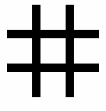
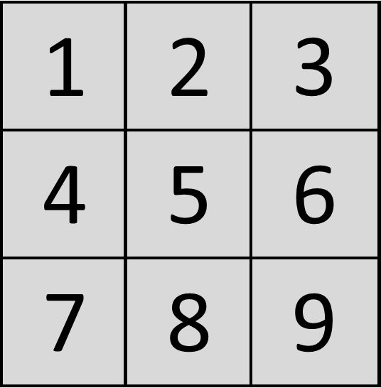

About Tic-Tac-Toe Game
3.Proposed Solution:
3.1. Game Layout:
3.1.1.Player & Board:

In this game, there is
a board with n x n squares.
In our game, it is 3 x 3 squares.
The goal of Tic-Tac-Toe is to be one of the players to get three same
symbols in a row -
horizontally, vertically or diagonally - on a 3 x 3 grid.
Our game can be played by two players.Two player are human and computer.Which means we can play:
(a) Human VS Computer(In our game)
3.1.2. Proposed Solution:
A player can choose between two symbols with his opponent, usual games
use “X”and “O”.
If first player choose “X” then the second player have to
play with “O” and vice versa.
A player marks any of the 3x3 squares with his symbol (may be “X” or “O”)
and his aim is to create a straight line horizontally or vertically or diagonally
with two intensions:
a) Create a straight line before his opponent to win the game.
b) Restrict his opponent from creating a straight line first.
In case logically no one can create a straight line with his own symbol, the
game results a tie.
Hence there are only three possible results – a player wins, his opponent
(human or computer) wins or it’s a tie.

If any player is able to draw three Xs or three Os in the following
combinations then that player wins.
The winning combinations are:
a) 1, 2, 3 b) 4, 5, 6
c) 7, 8, 9 d) 1, 4, 7
e) 2, 5, 8 f) 3, 6, 9
h) 1, 5, 9 i) 3, 5, 7